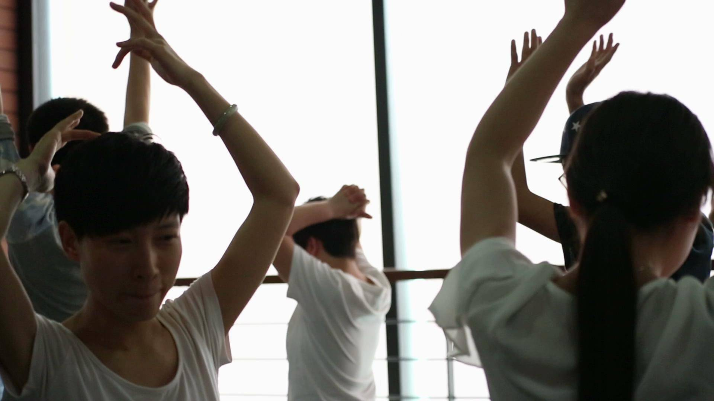
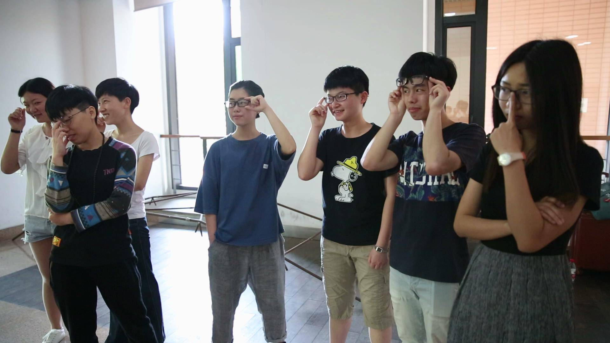
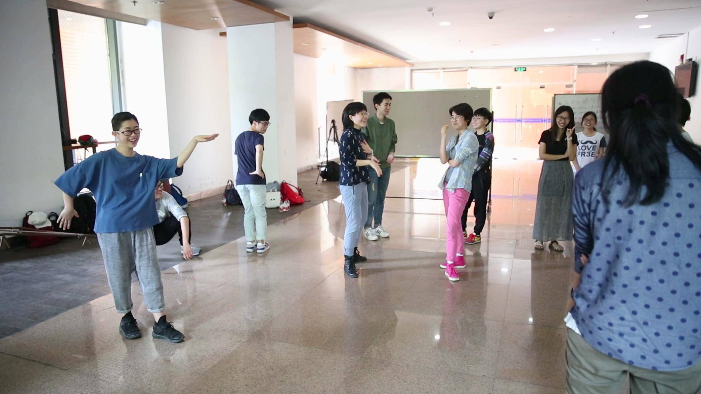
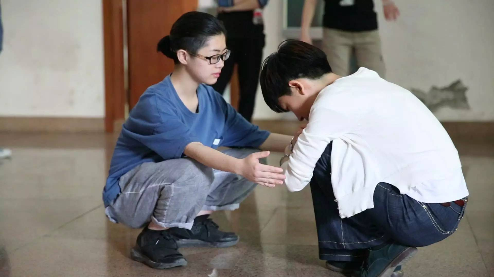

如何扮演白莲花和杜海涛？｜戏剧工作坊总结
眨眼之间
明媚可爱浑身充满着慵♂懒♂诱♂惑♂
气息的五一假期君
又和我们挥泪告别了
大家有没有在五一好好养精蓄锐呢！
然而这个假期，论坛的小伙伴们还没有休息下来哟。
5月1日，在浙江大学紫金港校区安中大楼，来自山泉剧社的 达达老师 和论坛招募的小伙伴萌一起完成了一次轻松愉悦、收获颇丰的性别戏剧工作坊！
那么……
什么是性别戏剧工作坊嘞？
（智障脸）
戏剧工作坊的目的不在于盈利，而是为了在更大范围内吸引戏剧爱好者，普及和提高大家对戏剧的认识和理解。由于观众和艺术家彼此都有交流需求，戏剧工作坊愈来愈受到大家欢迎。戏剧的普及程度越来越高，对于一场戏，观众不仅想知其一，还想知其二、知其三，观众并不满足于单纯地看场戏，他们可能对艺术创作本身感兴趣，或者对戏剧演员的训练方式和艺术家背后的故事感兴趣。同时，艺术家也希望能与更多关注戏剧行业的人交流。通过工作坊跟观众互动，戏剧导演能知道观众的想法，进而继续完善自己的作品。
而这次举行的性别戏剧工作坊，试图用戏剧的形式来讨论性别议题，让参与者在潜移默化的浸入式氛围中自然而然地学习性别的相关知识，提高性别意识。
（参与的小伙伴感觉学到了很多，思维也开放了很多呢！）
让我们一起回顾一下工作坊里大家都做了什么有意思的事情叭~

一探究竟
热身练习➊
达达老师先指引大家在一个限定的空间内进行无规则的位置移动，把每个人都想象成一个不断运动的颗粒，同时每个人都要想办法让这个空间内的颗粒分布尽量均匀。
其中一个参与者会先做出一种特殊的移动动作（比如跳跃，蹲着走、倒着走），其余的参与者都要模仿TA的动作行动。（这可以帮助大家迅速地集中注意力，进行接下来的活动）
热身练习➋
参与者围成一个圈，想象一个动物从达达老师身上窜出来，以逆时针方向穿过这个圈，每个人都要对这个动物做出闪避的反应动作。

活动➊
参与者保持无规则位移，达达老师大声喊出一个名词，参与者要立刻模仿自己对该名词的心理形象。当达达老师从身后拍一下某位参与者的肩膀时，该参与者要说出一句符合该形象的话。
那举个🌰！
“女博士！”

有几位参与者高冷地扶着眼镜腿——“啊你们这些无知的凡人！”“我的智商比你们加起来还高！”“学术就是我的爱人！”有一些一脸懵b地抬起了眼镜架——“嘤又要换眼镜了”“摘下眼镜就是瞎子”
（嘿嘿嘿明白怎么玩了叭）
游戏中出现过的词汇包括“女司机”“性工作者”“同性恋”“白莲花”“绿茶婊”等等普遍被社会以偏见看待的形象角色，而参与者的反映各异。比如说到“性工作者”时是这样的……

（风姿各异，婀娜曼妙）
唯独说到“同性恋”时，大家的动作呈现出了惊人的一致——一种“无所谓”的“正经”的“与常人无异”的形态。
随后达达老师引导大家也对此现象进行了分析。有参与者认为，这些对于某些形象的模仿其实是社会个体被公众偏见影响的产物。因为寻常人无法了解性工作者或是女博士究竟是何生存状态，于是就倾向于使用社会刻板印象来构造自己心目中的形象。而由于这次活动的性质，许多参与者都属于性少数群体，对于这个群体和群体里的人的了解比寻常的社会认识要深刻的多，于是就更能用中立、客观的态度面对这个本身就十分多元的群体，自然而然地会发现很难用一种形象来替代整个群体，最终便会摆出一副再“正常”不过的形态了。
同时有一些小伙伴提出，在听到词汇后的瞬间，他们会有意识地通过自己的形态来反驳社会的刻板印象，于是几乎在听到每一个词汇时，他们都是身体直立、面容平静的。
然而也有一些小伙伴坦陈，尽管他们尽力不被社会刻板印象干扰，但还是会或多或少地受到公众主流意识的干扰，自然而然地做出他们认为该名词所代表的外在形象。比如一说到“女司机”就会下意识地做出慌乱、紧张的司机形象。社会中的个体很难彻底逃脱公众惯常的标签化印记，所以在日常生活中更是要注重尽量以客观、中立的态度来看待一切可能引发公众争议的事物。
活动➋
达达老师让参与者票选出他们认为最值得讨论的一个近期与性别话题相关的具体事件。而最终的讨论话题是#柳岩事件#。
达达老师先是引导大家对柳岩事件中发挥作用的参与者进行分析，并筛选出“柳岩””柳岩家长“”贾玲（柳岩闺蜜）“”杜海涛（伴郎）“”柳岩经纪人“”新娘“六大参与部分。现场有六名志愿者分别对应其中的一个部分，其中的五名志愿者按照在该事件中与柳岩的感情距离围绕成一个放射状环形。

（和柳岩在感情距离上最贴近的柳岩的母亲）
站好位置后，五位志愿者根据与柳岩距离由近到远分别对柳岩说一句话。母亲对柳岩表达了无条件的支持；经纪人则为自己不得不维持公司形象而无奈地致歉；新娘和闺蜜表达了她未能成功救下柳岩的遗憾；伴郎则为自己不当的行为道歉。随后柳岩根据他们说的话和自己的意愿，到每个人的身后对他们说一句话。柳岩选择对闺蜜说了“谢谢”，而对其他所有人说“对不起”。
为何柳岩会选择对给她造成了如此公众形象损害的伴郎致歉？为何柳岩没有表达出愤怒、不满、失望、低落等等任何激烈的情绪？
有一些小伙伴认为，作为此次事件的最大受害者，柳岩始终怀着一种歉疚之情。她为自己把众人卷进了这处闹剧的漩涡而致歉，她为给公众造成的风波而致歉。在以往的负面新闻中，往往也是受害者受到了最大的伤害和关注，那些加害者却总是销声匿迹于新闻之中。公众对受害者的过多要求实际上给受害者施加了巨大的心理压力，让受害者无法受到她应有的补偿，更难以发出她真正的声音。
有一些小伙伴觉得，柳岩在此次事件中的失语，其实代表着众多受害者在类似语境下的被沉默。而这也是让柳岩事件演变成舆论争议中心的原因。为数众多的受害者是这次事件的酵母，一个走入公众视野的悲剧背后掩藏着更多无人关注的丑恶。

▎小利：
学到了很多，特别是用戏剧或者是身体表演参与的形式讨论议题的方法，体验更深刻，而且很有互动性。希望以后有更多这样的活动。主办方辛苦了～
（苦瓜君：嘿嘿嘿希望你继续支持论坛的活动！）
▎Alan：
我真的没有想到打打的互动居然贯穿整个活动，因而在后面我整个人是非常放松的状态，打打不愧是打打。从开始的游戏到之后的柳岩事件角色雕塑表演。我知道了戏剧的表演是需要对肢体语言和对人物内心情感进行很多揣摩的。曾经我有几秒是有点茫然的，这根山泉剧社有啥关联吗，说好的戏剧呢，怎么就在玩游戏了，果然我还是太年轻，年轻真好，感觉自己好可爱。但就是太年轻，自己其实不是很敢发表自己的意见，自己也不能及时回答打打所问的问题。只能活动结束后，继续慢慢思考柳岩问题。柳岩问题是否值得被大众所探讨，以及柳岩到底是怎样的人。柳岩一路走来都是不易，她热爱主持，所以去学主持，她并不是传媒大学的科班生。并参加比赛想争取到更多的工作机会。她深知娱乐圈的生存法则，不惜卖弄性感。我还记得有一次看娱乐节目，看到了柳岩非常用力地抱住郭德纲，并用并用谄媚的神色与示好的言语讨好我们的小郭。这里就可以看出，柳岩是以为多么努力的女人。她爱炒作也是努力的一个方面。其实刚开始认识她，并不怎么喜欢她，因为我认为她的脸蛋并不怎么好看，大多数人总是看脸喜欢明星。但后来想想，一个并不好看的人能混成她这份上，足以见得她背后的付出是多么多。我们也要像她学习，做一个努力的girl。
（苦瓜君：相信你一定能成为棒棒哒小伙砸！）
最后祝贺我们的工作坊圆满举行！
希望大家继续支持论坛活泼有趣、丰富多彩、意义非凡、干货满满的活动！
有人要问这么好的活动什么时候还会有？噫 ，桥豆麻袋！桥豆麻袋！哦尼酱！那你就不要错过我们含金量足足的 多元性别工作坊 ！
推文传送门

报名传送门